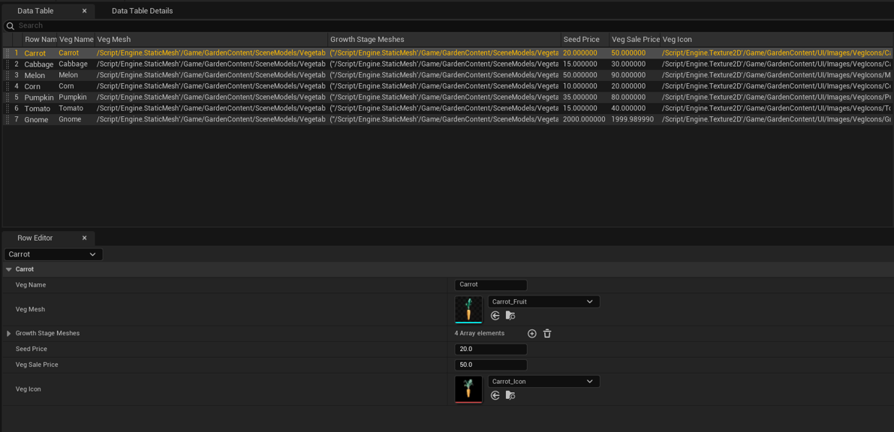
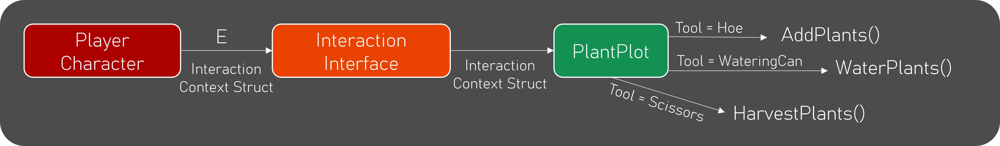
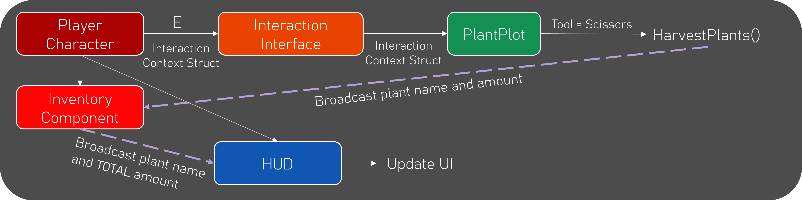

Sow & Grow
Solo University Project - UE5 C++ and Blueprints
Sow & Grow is a peaceful gardening simulator where the player purchases seeds, plants and waters them, and then harvests and sells the vegetables for a profit.
This game was created for a university module - C++ for Engines. The goal of the project was to create a set of mechanics with high-quality code focused on good communication between classes.
Details
- Solo University Project
- Grade: Pending
- Role: Generalist Programmer (UI, mechanics)
- Duration: September - November 2025 (9 Weeks)
- Genre: Gardening Simulator
Game Mechanics / Features
Planting System
Planting
A plant data table holds all plant-related data including: name, mesh, growth stage meshes, seed price, selling price and UI icon. The planting systems all work using this data table, meaning new plants can be added with ease simply by adding a new row to the table.
The player interacts with the plant plots using an interaction context. This context passes through which tool the player is holding, what seed they want to plant, and how many. The plant plot then decides which function to run based on the tool. Below is a diagram of how the communication works within this system:
I made use of object pooling to reduce the performance cost of repeatedly spawning and destroying the plants. Then the data table is used to assign a plant 'type' when a seed is planted.
Growing & Watering
A timer begins when a plant is activated, this determines when the plant will swap mash to the next growth progression. Watering the plant will half the time taken to grow.
Harvesting
When harvested, the plant plot will broadcast the name of the harvested plant and the amount harvested. The player's inventory component will listen for this and will update the stored values and UI accordingly. Here is a diagram showing the communication for this system:
UI
For this project, I designed and implemented the UI including the inventory display, tool bar, planting menu and money counter.
The inventory display will create new widgets based on what the player harvests so, for example, a carrot will not be displayed until one has been harvested. This allows items to be dynamically added to the inventory based on the plant data table mentioned previously.
.